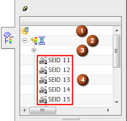

When you load the results of a system run, the Solution node in the Post-Processing Navigator expands to display:
The residual results.
One superelement data block for each superelement.
Superelement data blocks are listed by their Nastran superelement ID (SEID). You can preview the superelement ID in the FE Model Occurrences Attributes dialog box for selected superelement components.
|

|
When you first load the system run results, the superelement data blocks are not loaded. To view superelement results along with the residual, load the data blocks, and then use Plot and Overlay Loaded SE to create multiple superelement post views in the same viewport as your residual. When you use this command, the software:
Creates a master post view of selected results for the residual.
Identifies the equivalent result in each loaded superelement data block, and overlays the results in the same viewport.
Sets all postviews to Absolute deformation with a scale factor of 1.0.
Scales the color bar using Combined Viewport Displayed, which specifies minimum and maximum values based on all results displayed in the current viewport.
You can use Shift-click or Ctrl-click to select multiple post views in the Post-Processing Navigator. You can then use the commands in the Post-Processing toolbar to apply the same settings to all post views simultaneously. For example, you can quickly apply consistent deformation scaling to all selected post views.